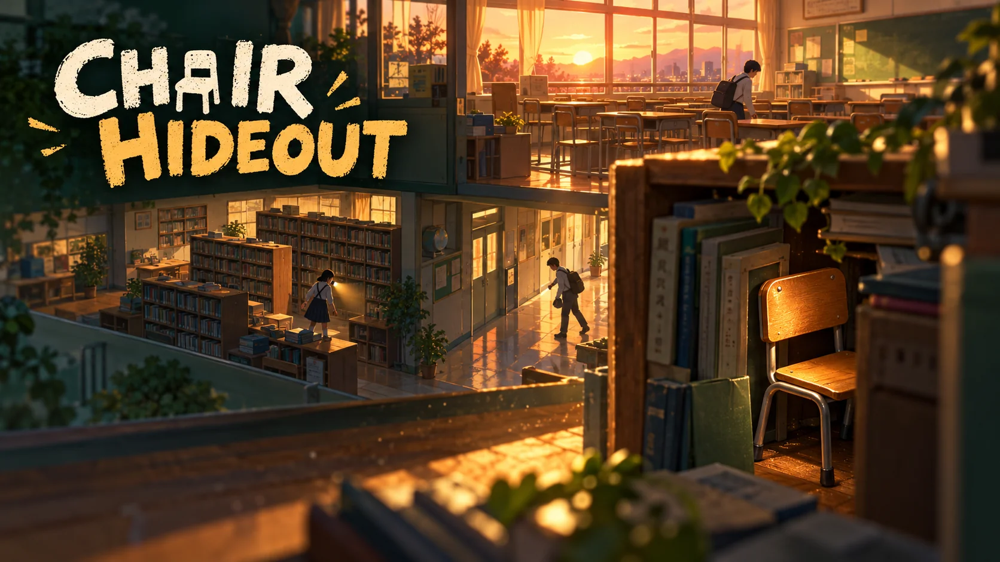

作品概要
どの椅子を、どこに隠すか。限られた作戦ポイントとマップの仕掛けを使い、最後まで見つからない配置を考えます。
CHAIR HIDEOUTは、10脚の椅子を配置し、11人の探索者に見つかって座られないよう60秒間守る戦略ゲームです。椅子には1〜5ポイントの価値があり、10脚の合計は30ポイント。制限時間まで生き残った椅子の価値がスコアになります。 学校を含む10マップを収録しています。学校以外の9マップは試作版として公開中で、地形・描画・難易度は引き続き調整しています。
ゲーム / 椅子隠し戦略ゲーム
10脚の椅子を隠し、11人の探索者から60秒間守るブラウザ向け戦略ゲーム。
どの椅子を、どこに隠すか。限られた作戦ポイントとマップの仕掛けを使い、最後まで見つからない配置を考えます。

Quick Look
どの椅子を、どこに隠すか。限られた作戦ポイントとマップの仕掛けを使い、最後まで見つからない配置を考えます。
CHAIR HIDEOUTは、10脚の椅子を配置し、11人の探索者に見つかって座られないよう60秒間守る戦略ゲームです。椅子には1〜5ポイントの価値があり、10脚の合計は30ポイント。制限時間まで生き残った椅子の価値がスコアになります。 学校を含む10マップを収録しています。学校以外の9マップは試作版として公開中で、地形・描画・難易度は引き続き調整しています。
探索開始から30秒後、3 APを使って椅子を動かしたり、マップ固有のギミックを操作したりできます。同じ階への移動は1 AP、別の階への移動とギミックは2 APです。
移動経路には痕跡が残るため、場所を変えるか、仕掛けにAPを使うかの判断も重要です。椅子や探索者のいる地点には移動できません。
学校、巨大家具店、スーパー銭湯、ショッピングモール、巨大水族館、映画撮影スタジオ、地下駐車場、巨大迷路庭園、走行中の夜行列車、宇宙ステーションを用意しています。
消灯で視認距離を縮めたり、館内放送で探索者を誘導したり、シャッターや列車のドアを操作したり。マップによって、階の構成や探索の見通し、使える仕掛けが変わります。学校以外は試作版として調整中です。
スーパー銭湯には、視線が通ると見つかる露出地点、仕切りなどで視線を遮る死角地点、近づいて調査するまで椅子の有無が分からない隠蔽地点があります。空の隠蔽地点も探索者の調査対象です。
浴槽は通行を妨げますが水面越しの視線は通り、湯気は視認距離を縮めます。「隠し方の実験室」で銭湯のルールを体験できます。
椅子一覧から選び、マップ上の空いた候補地点をクリックまたはタップして配置します。マップはドラッグで移動でき、ホイールや画面のボタンで拡大・縮小できます。複数階のマップでは階を切り替えられ、表示していない階でも探索は進行します。
探索中は一時停止と1・2・4倍速を使用できます。見通しの表示は選択した椅子付近を調べる目安で、斜めや別階からの視線を含まず、安全を保証するものではありません。
各マップの目標は18ポイント以上。作戦タイムでAPを使わず15ポイント以上を獲得する共通課題や、マップごとの珍実績にも挑戦できます。結果画面では椅子ごとの生存状態や発見・着席履歴などを振り返れます。
開始時の配置を使い、同じ探索条件または新しい条件で再挑戦できます。配置はマップごとに1件保存できますが、実績・ベスト記録のJSONバックアップには配置データは含まれません。記録はブラウザに保存され、別端末へ自動では引き継がれません。
学校以外の9マップは試作版で、地形・描画・難易度を調整中です。全マップの最新状態での通しプレイ、タッチ実機、ゲームパッド、BGM・環境音は今後の確認・改善対象です。
自動テストや固定方針のシミュレーションはありますが、それだけで実ブラウザの見た目、実機操作、最適配置や実際のプレイ難易度を保証するものではありません。
ブラウザでプレイできます。学校を含む10マップを収録し、学校以外の9マップは試作版として調整を続けています。